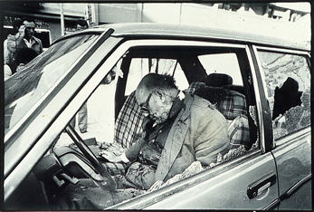
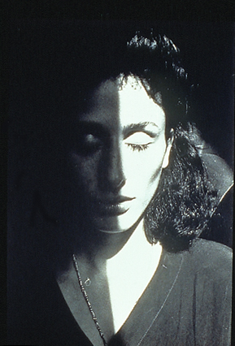

| |
|  |
|
Fig 1: Letizia Battaglia,
September 5, 1979, Palermo, black and white photograph. From
Letizia Battaglia: Passion, Justice, Freedom – Photographs
of Sicily, Aperture, New York, 1999.
|
Letizia Battaglia: Passion Justice Freedom –
Photographs of Sicily
Aperture (Burden Gallery)
20 East 23rd Street
October 16 – December 31, 2001
There has been a great deal of discussion lately, questioning whether
art can provide a legitimate response to disaster, or if art that
addresses a tragedy on the scale of the attacks on the World Trade
Center in fact trivializes the event. The work of Letizia Battaglia,
on view at Aperture’s Burden
Gallery and featured in an Aperture publication from 1999 illustrates
how art can both respond to desperate conditions and provide an
avenue of hope, a way out of despair.
Letizia Battaglia can be tagged with many labels – photographer,
political activist, feminist, environmentalist – none of which
adequately convey who she is. Since the 1970s Battaglia has been
documenting life in her native Sicily – its tragedies and violence,
its stoicism and dignity. Rarely has an artist been bestowed with
such an appropriate name: Letizia means joy, Battaglia means battle,
and these two poles define the emotional territory that her work
inhabits. While she started out as a photojournalist, Battaglia
transcends the confines of that field and imbues every image with
a timeless nobility and humanity. For several years she stopped
taking pictures and officially entered the world of politics, standing
for election and serving on the city council. She was instrumental
in saving and reviving the historic center of Palermo, established
her own publishing house and is deeply involved in working for the
rights of women and, most recently, prisoners.
Much of Battaglia’s work documents the brutality of the Mafia:
corpses, grieving widows, bloodstained streets. What is striking
is the conflict between acceptance and outrage. Groups of onlookers,
stoical and beyond shock, have seen it all before. Mourners wracked
by sobs seem to be playing out a tragedy that defines every chapter
of their lives. But Battaglia refuses to accept this reality. Her
lens moves in too close for comfort, capturing a moment that is
not meant to be seen, a scene that perhaps will be set back in order,
hurriedly, as soon as possible (Fig 1).
|
|
|
Fig 2: Letizia Battaglia,
1998, Palermo, black and white photograph. From Letizia Battaglia:
Passion, Justice, Freedom – Photographs of Sicily, Aperture,
New York, 1999.
|
Battaglia’s proximity to her subjects is unblinkingly
honest, but it is never cruel. Her photographs of psychiatric patients
expose the dimensions of their world without condescension. Most
of Battaglia’s subjects either avoid the camera or are caught
unawares. Mafiosi on trial, of course, would rather be elsewhere
and look away in shame or defiance. Aristocrats at a gala party
are as oblivious to the photographer as they are to the wider surrounding
world. But there are some notable exceptions. Her portraits of children,
particularly young girls, pay tribute to their eerie, prematurely
adult beauty. Interestingly, these adolescent girls openly return
the camera’s gaze. It seems to be a complicit glance, charged
with a conspiratorial understanding of life’s inequity and
harshness. Another powerful image in the exhibition – a young
mother whose child has been bitten by a rat during the night –
atypically looks straight into the camera, honestly acknowledging
her plight, yet more heroic than resigned. One of the most emotionally
laden and direct glances is exchanged between the photographer and
Magistrate Roberto Scarpinato. It was Scarpinato who was the lead
prosecutor in the trial of former Prime Minister Giulio Andreotti
(who was acquitted). Scarpinato stands erect and stares ahead, enveloped
in sadness. His entourage of bodyguards looks away (Fig 2).
|  |
|
Fig 3: Letizia Battaglia,
1993, Palermo, black and white photograph. From Letizia Battaglia:
Passion, Justice, Freedom – Photographs of Sicily, Aperture,
New York, 1999.
|
The image used for Aperture’s Burden Gallery
announcement is one of Battaglia’s most formally elegant works
(Fig 3). It is a portrait of Rosaria Schifani, widow of the bodyguard
for Judge Giovanni Falcone, who was assassinated with the Judge
in 1992. Schifani spoke out eloquently at the state funeral, and
in Battaglia’s photograph, her face is cut vertically by a
black shadow. Emerging from the shadows, she could be a symbol of
present-day Sicily, half-trapped in ancient rituals and blood feuds,
half-released into the sunlight.
I spoke to Battaglia in early October, conveying a message from
Melissa Harris, Senior Editor at Aperture and curator of this exhibition.
Harris wanted Battaglia to know that she would understand if the
photographer decided to forego her trip to New York, given the difficulties
of post-September 11th life in the city, and the specific rigors
of airline travel. Typically, Battaglia was indignant and insisted
that she had to come to New York, now more than ever, to show her
solidarity. Once here, the city’s sadness and sense of depletion
struck her. She has seen her own city under attack, albeit one of
a different nature and duration, and she has seen her country wounded
and fearful. She knows, better than most, that courage can uncover
the power to endure and to heal.
Sources>>
Author's Bio>>
|
|